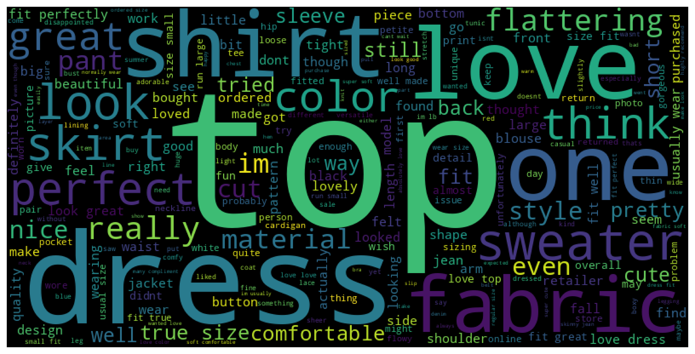
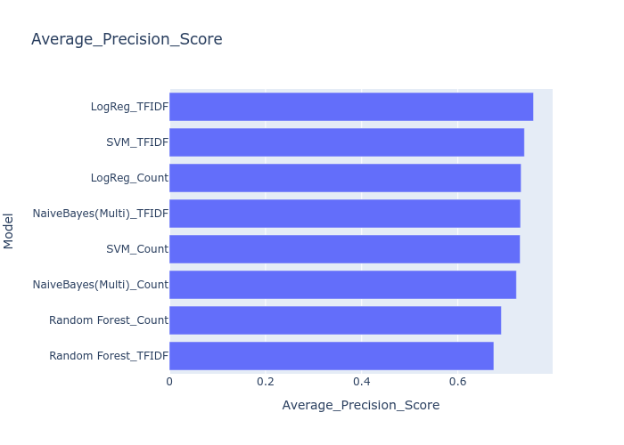

Sentiment analysis of customer reviews
In this project, I perform sentiment analysis of reviews by customers of an E-commerce women's clothing brand. After cleaning and pre-processing the reviews, I used two vectorisation approaches: bag-of-words and TF-IDF to do word vectorisation. I trained the reviews on 4 classification models to determine the best performing model.

Data
- The data for this project was taken from Kaggle.
- The data-set is labelled in two classes: "Recommended: 1" and "Not Recommended: 0"
Pre-processing
- Cleaned and analysed each available feature, checked their variations using histogram with the recommended and non-recommneded labels for the dataset closely.
- The data was then checked for duplicates and missing values.
- Tokenized
- Removed of any usernames (starting with @), and punctuations
- Passed through Lemmatization
- Removed off rare-words and stop words
To clean each review, the content of the tweet was:

I then made the wordclouds for both recommended and non-recommended reviews to check words with extreme emotions.
Application of classification models
2. TF-IDF Vectorizer
